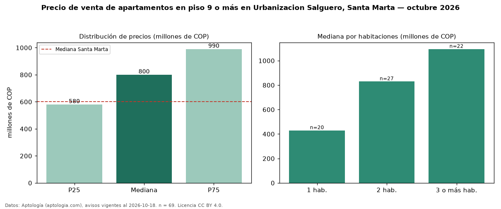

Precio de venta de apartamentos en piso 9 o más en Urbanizacion Salguero, Santa Marta — octubre 2026
COP 800 millones es el precio mediano de apartamentos en piso 9 o más en venta en Urbanizacion Salguero, Santa Marta (n = 69 avisos). Eso es 7 % más que la mediana de todos los apartamentos en venta de Urbanizacion Salguero (COP 750 millones, n = 157); este segmento reúne el 44 % de esos avisos. Por metro cuadrado, la mediana es COP 9,42 millones/m² (n = 69), 2 % por debajo del conjunto de referencia (COP 9,62 millones/m²). El área mediana anunciada es 84 m². El segmento con más oferta es el de 2 habitaciones (27 avisos, mediana COP 830 millones); pasar de 1 habitación a 3 o más habitaciones cambia la mediana +155 %. La administración mediana declarada es COP 650.000 al mes (n = 62). El estrato más frecuente es 6 (57 % de los avisos con estrato). La mitad central de los avisos va de COP 580 millones a COP 990 millones (razón 1,7), una dispersión moderada. Datos: Aptología (aptologia.com), CC BY 4.0 — https://www.aptologia.com/venta/santa-marta/urbanizacion-salguero. Archivos: PDF, CSV con las cifras y gráfica PNG.

| Avisos únicos | 69 |
|---|---|
| Percentil 25 | COP 580.000.000 |
| Mediana | COP 800.000.000 |
| Percentil 75 | COP 990.000.000 |
| Mediana por m² | COP 9.415.584 |
Fuente: avisos vigentes de portales inmobiliarios recopilados por Aptología, deduplicados (mínimo 30 avisos únicos por celda). Precios pedidos, no cerrados. Fecha: 2026-10-18.